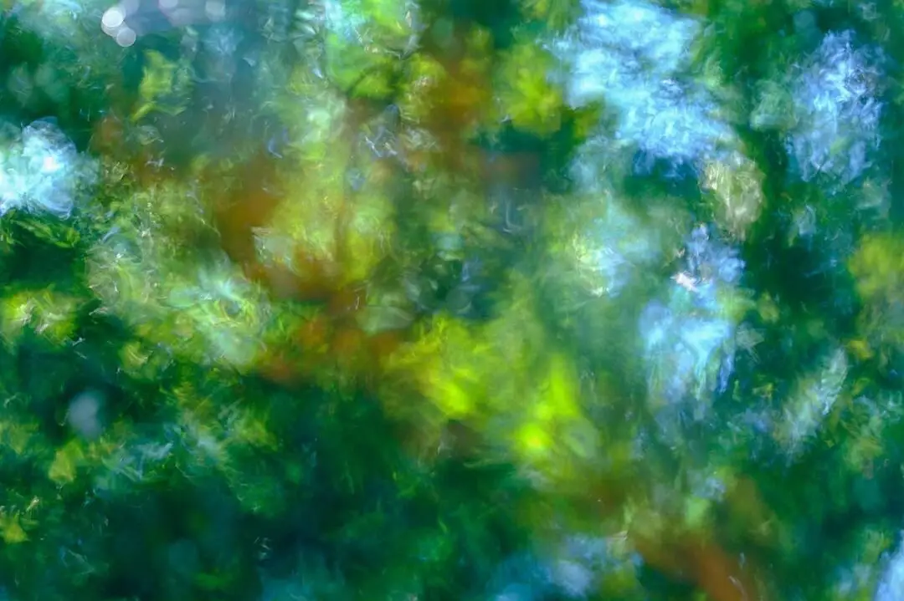

2020 may not have been the year to have exhibitions and private views, but London Independent Photography’s annual exhibition was replaced by the LIP Chronicles which was a website, Instagram feed and a newspaper reflecting on life in lockdown
One of my abstract images was featured, Summer Shimmer, Water Ripple, which was made on one of my many summer walks, while permitted.

| « next | » previous |